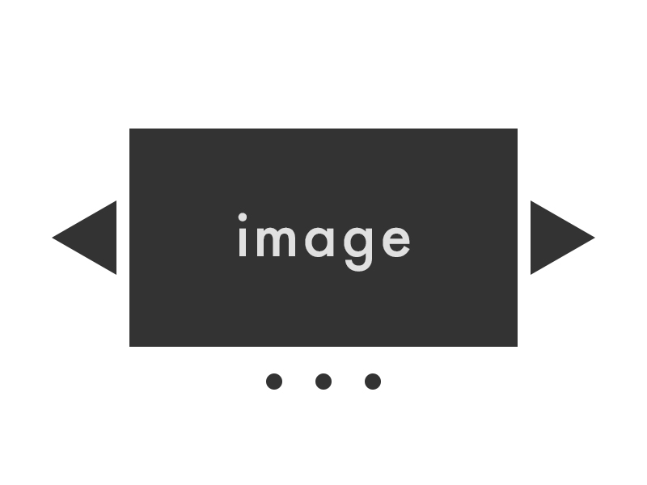

課題4:イメージスライダーを制作する

上の図を参考に、イメージスライダーを制作してください。
以下の中途半端に記述されたDOMをイメージスライダーに編集してください。
- 課題遂行に際しての諸注意
- jsを編集する場合はsrc/js/no04_imageSlider.jsを編集してください。
- cssを編集する場合はno04_imageSlider.scssを編集してください。
- htmlを編集する場合はno04_imageSlider.htmlを編集してください。
-
JSはES201X,
ES5、どちらの記述でも構いません。jQueryが業務で使用頻度が高い場合、jQueryの使用も可能です。
業務に役立つ記述方法を選択してください。